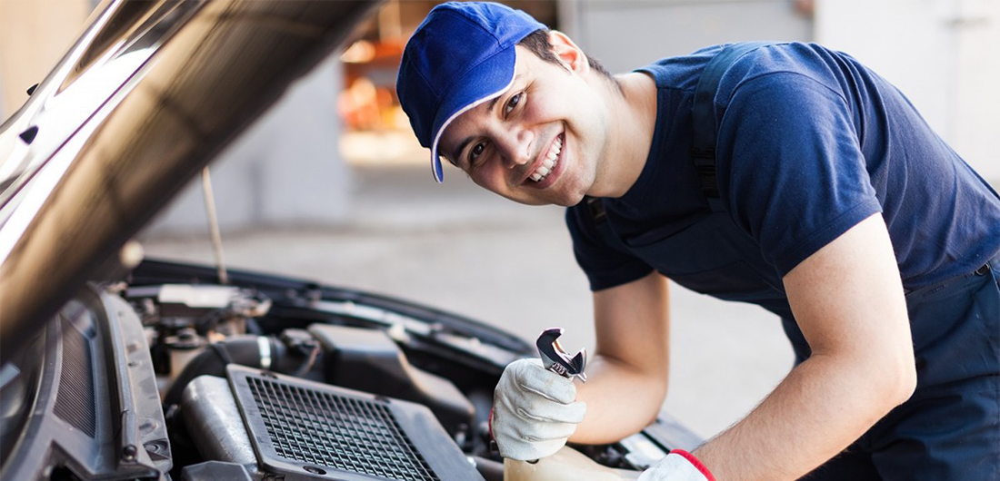
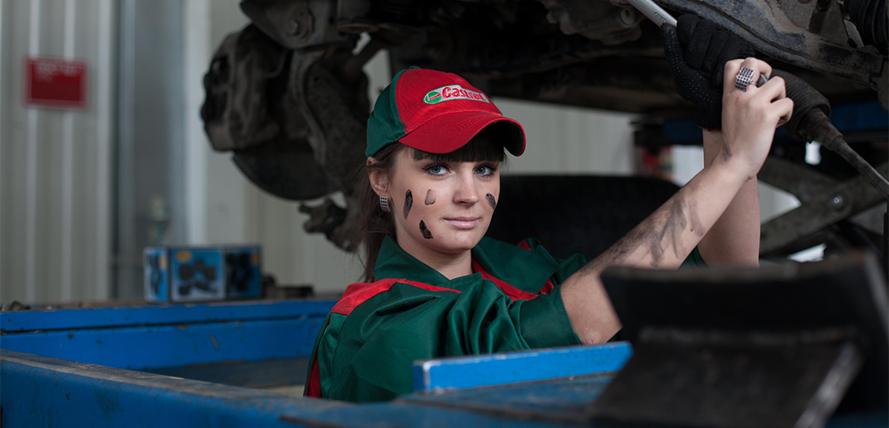
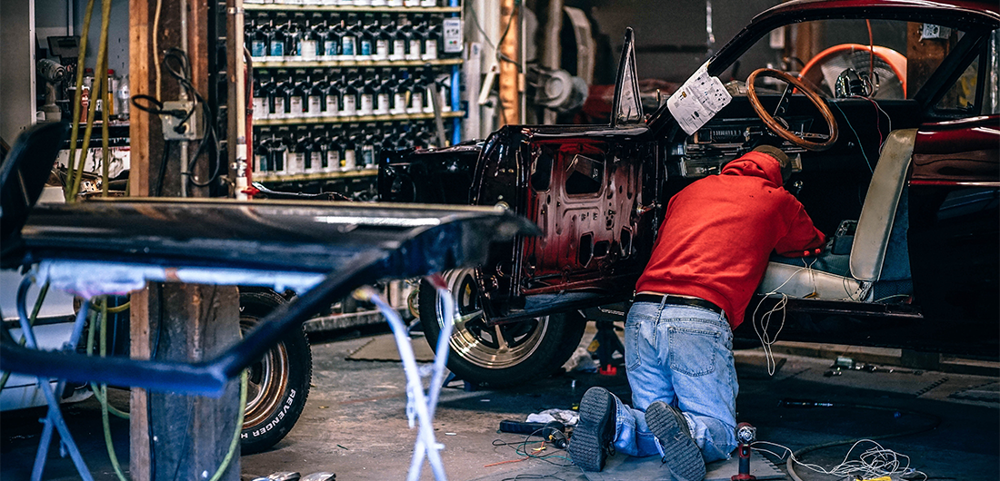
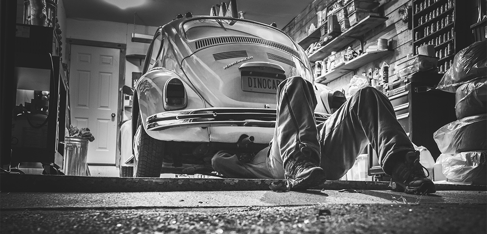
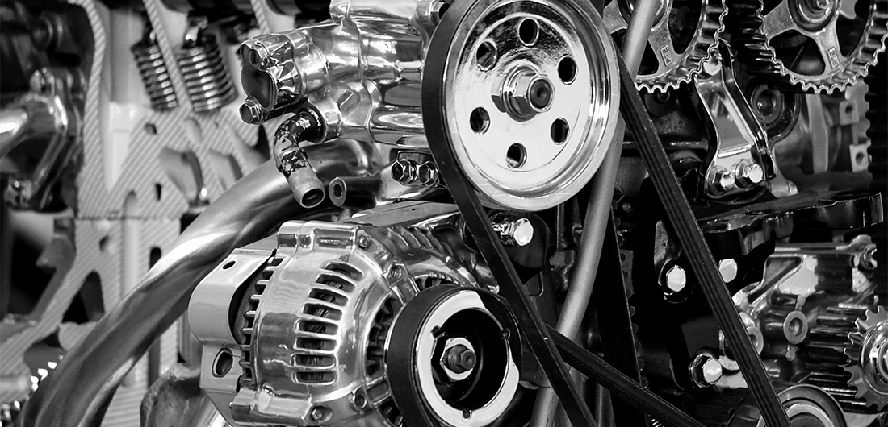
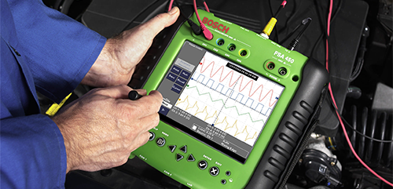

Выполняем
ремонт и техническое обслуживание (ТО) автомобилей.





Каждый клиент СТО может быть уверен, что его автомобилю будет уделено
особое внимание и выполнен качественный ремонт.
Для обслуживания и ремонта автомобиля у нас есть все необходимые
условия:
- современное диагностическое и ремонтное оборудование,
- опытные мастера,
- предварительная запись по телефону,
-
доступная
стоимость ремонта автомобиля.
СТО автомобилей соответствует этим требованиям, и мы готовы
предоставить
услуги по
техобслуживанию и ремонту.
-
У нас Вы можете получить абсолютно бесплатную комплексную
диагностику автомобиля, прежде чем мы приступим к ремонту
-
Мы предлагаем огромный комплекс работ от техобслуживания автомобиля
до ремонта двигателя;
-
Техническое обслуживание на нашем СТО в Минске выполняется в строгом
соответствии регламенту;
-
Вы получите длительную гарантию на выполненную работу и замененные
детали;
- У нас работают только профессиональные опытные мастера;
-
Если Вы ищете качественный и быстрый ремонт автомобиля в Минске
«СТО по ул. Тимирязева 52» — лучший выбор!
Мастера автосервиса постоянно обучаются, повышают квалификацию.
Специалисты СТО делают все для того, чтобы каждый клиент остался
доволен произведенным ремонтом, дадут рекомендации и
советы для автолюбителей
по правильной эксплуатации автомобиля.

Наш автоцентр предлагает клиентам услуги по ремонту автомобиля:
-
все виды ремонта и ТО автомобилей;
- Мы предлагаем полный комплекс работ профессионального уровня
Клиенты нашего автосервиса достойны только лучшего и мы готовы
предложить:
- Профессиональный ремонт автомобиля;
- Качественные запчасти для ремонта и ТО;
- Гарантируем качественное исполнение работ любой сложности.